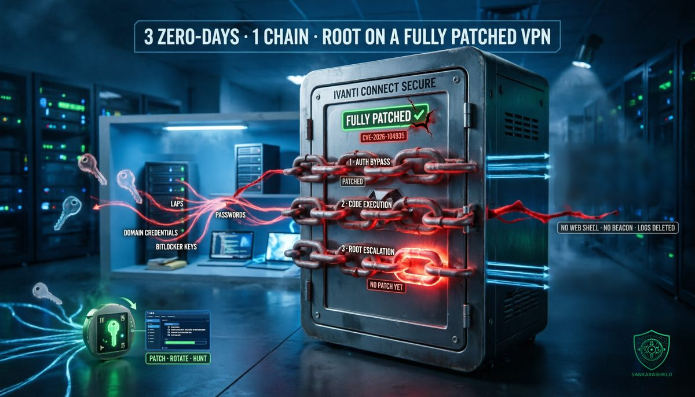

“Fully patched” was true. It just was not enough.

In the first days of October, an attacker nobody had documented before walked into an Ivanti Connect Secure VPN appliance that was running the latest release, 22.8R2.4. It did not need a password. It did not need a phishing email. It chained three vulnerabilities that no one outside the attacker knew existed, and it ended up running code as root on the device that guards the front door of the network.
The incident response firm Volexity found it, tracks the actor as UTA0576, and published its analysis on 13 October, the same day Ivanti shipped fixes for two of the three flaws under CVE-2026-104935. CISA added the CVE to its Known Exploited Vulnerabilities catalog that day and gave federal agencies until 16 October to patch.
The third flaw, a privilege escalation, is still unpatched.
WHAT ACTUALLY HAPPENED
On 5 October, Volexity started investigating suspicious activity at a customer it monitors and traced it back to the customer's Connect Secure appliance. The evidence showed that UTA0576 had been exploiting the device repeatedly since 3 October.
That was harder to establish than it sounds. The attacker had removed its traces from both Ivanti's debug log and the Linux audit log. Volexity had to work with Ivanti on memory images, disk images and core dumps to rebuild what had happened.
Ivanti says it is aware of a limited number of affected customers. Fixed releases are 22.8R2.5, 25.1.1.2, 25.1.3.0 and 25.1.3.1. Appliances on 25.1.1 and earlier, 25.1.2 or 22.8R2.4 should be upgraded.
THE CHAIN, LINK BY LINK
LINK 1 — AUTHENTICATION BYPASS. A public page used before login, welcome.cgi, accepted a header (X-DSCGI-PATH) that routed the request to protected scripts. The URL decided whether access checks applied; the header decided what actually ran. Anyone on the internet could reach code meant for authenticated users.
LINK 2 — FILE WRITE TO CODE EXECUTION. An upload handler wrote incoming files to a temporary location before checking they were valid archives, then deleted the invalid ones. In the short window between writing and deleting, the attacker executed its file. A race condition turned a cleanup routine into remote code execution.
Links 1 and 2 are both covered by CVE-2026-104935 and are fixed.
LINK 3 — PRIVILEGE ESCALATION TO ROOT. A privileged service on the appliance trusted cached configuration data. The attacker patched a library in memory so that a routine maintenance task launched an interpreter as root. No file on disk was changed. Ivanti says the fix will ship "in the coming weeks." Until then, any attacker who reaches code execution by another route has a known path to root.
WHAT THE ATTACKER DID WITH ROOT
UTA0576 did not install a backdoor or a web shell. It did not open a separate command-and-control channel either. Each command re-ran the whole exploit chain, and the results came back in the HTTP response. To the network, it looked like traffic to the VPN portal.
The payloads lived in memory. Once a task was done, the attacker restored the memory patch, reset the configuration entry, deleted its scripts and edited the logs to remove only the entries from its time window, leaving older entries in place.
What it went after tells you why the VPN was the target
— Stored credentials. The appliance holds domain credentials to talk to Active Directory over LDAP. The attacker took them, along with configuration and authentication settings.
— Active Directory secrets. With the appliance's own service account, a custom LDAP tool searched for LAPS local administrator passwords, BitLocker recovery keys, password attributes and logon script paths.
— Credentials in transit. A packet capture tool disguised under a system-like name recorded LDAP traffic, and a parser extracted LDAP credentials, HTTP Basic Auth credentials and NTLM hashes from it.
— Usernames. The attacker parsed the appliance's own authentication logs to build a list of valid accounts.
— Password spraying and Kerberos testing. Those usernames were sprayed against Active Directory, and a custom tool tested the credentials it obtained.
— Reconnaissance. It pulled the DNS configuration and resolved internal domains.
Volexity says with high confidence this was preparation for lateral movement and a broader compromise. The intrusion was disrupted before the final objective was clear.
WHY THE VPN IS THE WORST PLACE TO LOSE
A VPN concentrator is not just a gateway. It is one of the most trusted systems in the network. It sits on the boundary, talks to the directory with a service account, sees authentication traffic, and keeps logs of every user who connects.
That is why UTA0576 did not need malware. Everything it wanted was already on the box or passing through it. The appliance became the attacker's credential store, its packet sniffer and its reconnaissance platform.
And because commands rode inside normal-looking HTTPS requests to the portal, there was no strange outbound beacon for a firewall or proxy to flag. The detection that worked was network security monitoring and memory forensics, not a signature.
WHY “FULLY PATCHED” IS A STATUS, NOT A GUARANTEE
This appliance was up to date. Its owner did what every checklist asks. That did not help, because the vulnerabilities were unknown until the attack was found.
Patching closes known doors. It does nothing about the door the attacker found first. For internet-facing appliances, that means the real questions are different: what can this device reach, what does it know, and how quickly would you notice it misbehaving?
There is a second lesson. Ivanti's Integrity Checker Tool, which compares files on the appliance against a known-good state, did not detect this compromise. The attacker changed code only in memory and restored the configuration afterwards. A clean integrity check is not proof of a clean appliance.
THE AI QUESTION
Volexity assesses with medium confidence that UTA0576 used large language models for exploit development and post-exploitation. Its reasons: a complex three-stage chain, highly specific scripts with hard-coded values deployed repeatedly, and the choice to drive every command through the exploit itself instead of a simple web shell.
That is an assessment, not a proven fact. But it fits a trend defenders should plan for: building custom, single-use tooling is getting cheaper, so expect fewer reusable malware families to match against and more intrusions that are tailored to one environment.
WHAT TO DO NOW
PATCH TODAY — move every Connect Secure appliance to 22.8R2.5, 25.1.1.2, 25.1.3.0 or 25.1.3.1, and track Ivanti's advisory for the privilege escalation fix.
DO NOT STOP AT THE INTEGRITY CHECKER — if your appliance was exposed in October, treat a clean ICT result as inconclusive and involve a team able to do memory and network forensics.
HUNT FOR THE CHAIN — look for unusual volumes of requests to welcome.cgi, requests whose X-DSCGI-PATH header does not match the URL, files in /tmp such as ml.py, rq5.py, rr.py, mk.py, sp_run.py or spray_hits.json, a hidden /data/.icscap directory, and connections involving 108.165.147[.]64.
ROTATE WHAT THE APPLIANCE KNEW — the LDAP service account, any domain credentials stored on the appliance, local administrator passwords managed by LAPS and certificates on the device should be treated as exposed since 3 October.
REVIEW BITLOCKER AND LAPS ACCESS — check which accounts can read these attributes in Active Directory, and alert when a non-administrative account like the VPN's service account reads them.
SHRINK THE BLAST RADIUS — the VPN's directory account needs to authenticate users, not read half the directory; reduce its rights and restrict what the appliance can reach on the internal network.
WATCH FOR SPRAYING — failed logons spread across many accounts from the VPN appliance's address are a signal, not background noise.
WHAT TO READ WITH CARE
The timeline, the technical description of the chain, the post-exploitation activity, the indicators and the assessments on motivation and LLM use come from Volexity's report of 13 October. The fixed versions, the "limited number of customers" and the pending privilege escalation fix come from Ivanti, as reported by SecurityWeek and others. Volexity assesses with low confidence that the actor is criminal rather than espionage-driven, and with medium confidence that it used LLMs; neither is established. The privilege escalation has no CVE published yet, and the situation may change once Ivanti ships the remaining fix. Volexity notes that the extent to which each of the attacker's operations succeeded has not been fully established.
THE UNCOMFORTABLE PART
The organisation in this story did not neglect anything obvious. It ran a mainstream VPN, kept it up to date and paid someone to watch its network. That last point is the only reason we know about the intrusion at all.
Most organisations running these appliances have the first two and not the third. For them, the same attack would still be quietly running.
Patching ends the exploit. It does not end the intrusion.
If your VPN appliance were compromised last week, which credentials would you have to rotate first?